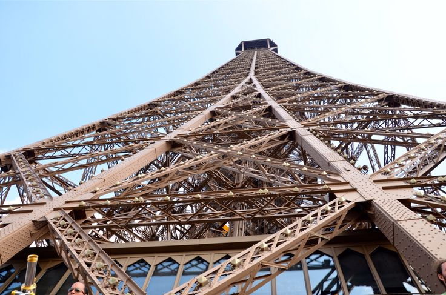

Turnul Eiffel (în franceză La tour Eiffel) este o construcție faimoasă pe schelet de oțel din Paris ce măsoară 324 m înălțime. Turnul a devenit simbolul Franței cel mai răspândit la nivel mondial. A fost conceput de către Émile Nouguier, Maurice Koechlin și Stephen Sauvestre, angajați la Eiffel și Co. Gustave Eiffel, inițial reticent cu privire la proiect, a devenit ulterior un mare susținător al său și a cumpărat brevetul. Turnul, care poartă numele său, este una dintre principalele destinații turistice ale Parisului și lumii, cu mai mult de 5,5 milioane de vizitatori anual. Turnul și-a primit cel de-al 200.000.000 vizitator la 28 noiembrie 2002.
Structura a fost construită între anii 1887-1889. Aceasta urma să servească drept arc de intrare la Expoziția Universală (1889), un târg mondial ce sărbătorea centenarul Revoluției franceze. A fost inaugurat la 31 martie 1889 și deschis pentru public la 6 mai. 300 de muncitori au unit 18.038 de piese de oțel pudlat(en), folosind două milioane și jumătate de nituri. Luând în considerare standardele de siguranță din acel moment, este remarcabil faptul că un singur muncitor a murit la construcția turnului, și anume în timpul instalării lifturilor. Lifturile originale funcționau cu ajutorul unui sistem hidraulic, pe când lifturile actuale sunt electrice.
Turnul are 300 m înălțime, excluzând antena din vârf, ce mai adaugă 20 de metri, și o greutate de peste 10.000 de tone. Când a fost construit era cea mai înaltă clădire din lume. Întreținerea turnului include utilizarea a 50 de tone de vopsea maro închis, la fiecare 7 ani.
Detali tehnice
Depinzând de temperatura aerului, Turnul Eiffel își schimbă înălțimea cu câțiva centimetri datorită contracției și dilatării aliajului de metale.Cel puțin la începuturile sale, publicul a întâmpinat cu multă reticență această construcție, considerând-o inestetică. Astăzi însă este considerat drept simbolul orașului și una dintre cele mai frapante piese de artă arhitecturală din lume. Unul dintre clișeele hollywoodiene este priveliștea de la o fereastră pariziană, care întotdeauna include Turnul Eiffel.La început, Eiffel a primit permisiunea de a lăsa monumentul în viață timp de 20 de ani, dar ținând cont că oferea o serie de beneficii în domeniul comunicațiilor, s-a renunțat la demontarea sa.

Turnul are 3 niveluri: accesul publicului la primul și al doilea nivel se poate face atât pe scări, cât și cu liftul, în schimb accesul la ultimul nivel se face exclusiv cu liftul.
Clădirea, unde lucrează 500 de persoane (250 de salariați direcți ai SETE și 250 ai diferiților concesionari ai monumentului), este deschisă publicului pe tot parcursul anului. Turnul Eiffel este înscris ca monument istoric din 24 iunie 1964 și face parte din Patrimoniul mondial UNESCO din anul 1991, împreună cu alte monumente pariziene.Furnizorul materialului de construcție pentru Turnul Eiffel a fost compania Forges et Usines Fould-Dupont.Minereul de fier utilizat a fost extras în Algeria, la Zaccar și Rouina.